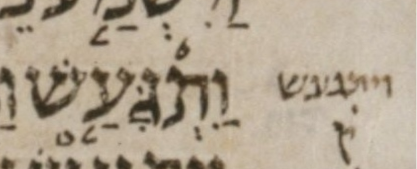

| bcv (link to tanach.us) | 2s22:8 |
| MPK | וַ◌ִתְגָּעַ֤שׁ |
| qere | וַיִּתְגָּעַ֤שׁ |
| at issue | יּ |
| at issue English | added a dagesh to yod |
| folio col line | 182A 1 11 |
The MPK has no letter to carry a dagesh for the qere’s yod.
Unlike the dagesh, the ḥiriq does not need a letter to carry it; it is allowed to be an orphan. It appears between the pataḥ and the sheva (of the vav and ת respectively). Unlike the manuscript, our MPK shows that orphan ḥiriq on a dotted circle.